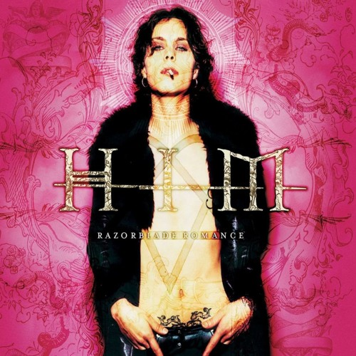
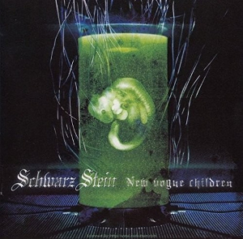
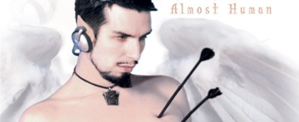

deSLASH - GOATBED
Lyrics:
Grind only the same
Plaid please keep a net
Night slide sobs while beating the wall
Black out where the nerve is paralyze
De slash la shout
Mite dark in the ditch is death
Clash back nancy infant stage dance dance
Night slide sobs while beating the wall
Black out where the nerve is paralyze
De slash la shout
Thrash out
Thrash out
Decay of a nova
De slash la shout
Arachne - Kaya
Lyrics (English Translation):
When I pushed my hand into the darkness ”the past” faintly swayed
Like a spider’s thread, memories softly creep up on me
The thread pulls me in and entwines my memories
A sweet fragrance is scattered about
Trembling butterflies in a spider’s web pile up beyond the mirror
Wanting to see you
In the darkness my hand vainly reaches out into emptiness
It the night it fades away
Unable to see you
My fragile wish gets caught in my web of memories
I can no longer breathe
A rose colored apparition sings in the depths of my dream
And laughs a soft beckoning laugh
I wake up with my dream leaving no trace
A meaningless morning begins
Don’t go
I can’t forget
In my memories I can’t
Wanting to see you
In the darkness my hand vainly reaches out into emptiness
It the night it fades away
Unable to see you
My fragile wish gets caught in my web of memories
I can no longer breathe
Wanting to see you
Unable to see you

Join Me in Death - HIM
Lyrics:
Baby, join me in death
Baby, join me in death
Baby, join me in death
We are so young
Our lives have just begun
But already we are considering
To escape from this world
And we've waited, too, for so long
For this moment to come
We're so anxious to be together
Together in death, whoah-oh
Won't you die tonight for love?
(Baby, join me in death)
Won't you die?
(Baby, join me in death)
Won't you die tonight for love?
(Baby, join me in death)
This world is a cruel place
And we're here only to lose
So before life tears us apart let
Death bless me with you, whoa-oh
Won't you die tonight for love?
(Baby, join me in death)
Will you die?
(Baby, join me in death)
Won't you die tonight for love?
(Baby, join me in death)
Join me in death, whoa-oh
This life ain't worth living
This life, it ain't worth living
(Join me, join me, join me,)
This life, it ain't worth living.
(Join me, join me, join me)
This life ain't worth living
Won't you die tonight for love?
(Baby, join me in death)
So would you die?
(Baby, join me in death)
Won't you die tonight for love?
(Baby, join me in death)
Baby, join me in death.Dramatique? - Ito Kananko
Lyrics (English Translation):
Jumping out! To the sky
Tuning in! Right now
Jamming out! Strongly
Changing it! The Future
Jumping in! To the Sea
Tuning out! Right now
Jamming in! Strongly
Clap your hands! Toward the Future
I can go on a step, for my dreams, for your dreams
I can go on a jive, for my dreams, for your dreams
Now, leave it to me
I can go deep glide, for my lust, for your lust
Now, leave it to me
I can go deep dive, for my lust for you
I just wanna be dramatic life at all the time and with you
Now, leave it to me
I can go deep glide, for our destiny
Driving on! Always
Bringing off! Without hesitation
Drifting on! And then
Carry it off! Believe
Driving off! And then
Clap your hands! Toward the light
Drifting off! And then
Clap your hands! Toward the light
I can go on a step, for my dreams, for your dreams
I can go on a jive, for my dreams, for your dreams
Now, leave it to me
I can go deep glide, for my lust, for your lust
Now, leave it to me
I can go deep dive, for my lust for you
I just wanna be dramatic life at all the time and with you
Now, leave it to me
I can go deep glide, for our destiny
Now, leave it to me
I can go deep glide, for my lust, for your lust
Now, leave it to me
I can go deep dive, for my lust for you
I just wanna be dramatic life at all the time and with you
Now, leave it to me
I can go deep glide, for our destinyA Lone Prayer - Yumi Kawamura
Lyrics (English Translation):
Lived in buried memory
With fear-ridden self-consciousness
I'm just a lone prayer
Keep running on the cold track
The hate crazed thoughts just don't stop
As if a dream awake from the dark
The world deletes all I said to you
Overwrite this pain tearing me apart
Melting
Frozen mind
Ray of light
Ready for a trip to nowhere
Overwrite this pain tearing me apart
I'm at ease
My last pray with no aim
My last... let me feel alive
Lived in buried memory
With fear-ridden self-consciousness
I'm just a lone prayer
Keep running on the cold track
The hate crazed thoughts just don't stop
As if a dream awake from the dark
The world deletes all I said to you
Overwrite this pain tearing me apart
Melting
Frozen mind
Ray of light
Ready for a trip to nowhere
Overwrite this pain tearing me apart
I'm at ease
My last pray with no aim
My last... let me feel alive
Rain Tears - Saki Fujita
Lyrics (English Translation):
Hey, do you know?
What appears in our eyes is dreams and illusions.
Under the grey sky, I walk, searching for you.
The words you spun, the past that was closed off –
What I hear is the sound of a single footstep.
(falling rain) The forest of destiny
(tears for you) Is a deeply sleeping memory.
The spiderweb threads are softly connected.
Before they’re reeled in,
I wonder if I’ll be able to see a gentle light.
Hey, do you know?
What echoes in my chest is the beat of the dark night.
I was listening carefully to the sound
Of the waves that approach and go back.
You who looked down, your whispered voice –
What will disappear is a fleeting wish.
(falling rain) The rainbow in the open sky
(tears for you) Is a legend that goes on forever.
The scent of flowers disappears in the rain.
I wonder if the day will come
When I accept a fate soaked in loneliness.
(falling rain) The forest of destiny
(tears for you) Is a deeply sleeping memory.
The spiderweb threads are softly connected.
Before they’re reeled in,
I wonder if I’ll be able to see a gentle light.
Sexy Sexy, - CASCADE
Lyrics (English Translation):
A mirage from the distance at dusk
I want to see you, I want to see you
I can't see you, I can't see you
Your Utopia
If we can meet in this place someday
I miss you, I miss you
I need you, I need you
Sexy, sexy
Hey? Why don't you come to my room?
I'll tell you a secret story
If you can't get going tonight
Even if I take away, there's nothing I can do
My heart was also wet on this dishonest night
Time cannot be turned back
Come back, come back, come back
A mirage from the far reaches of passion
Shake it, shake it
Shake it, shake it
Feel-good paradise
If we could meet in that burning place
Shake it, shake it
Shake it, shake it
Sexy, sexy dance
The stars turn pale and the flowers are in disarray
It shines brightly from the darkness
A mirage entangled in my fingertips
Teasing, teasing
Teasing, teasing
Let it simmer
I'll always be in love around here
I miss you, I miss you
I need you, I need you
Sexy, sexy you
Oh baby, my baby
Oh baby, oh baby
Your Utopia
Beyond the passion is a mirage
Shake it, shake it
Shake it, shake it
Many times
Shake it, shake it
Shake it, shake it
Sparkling
Sexy, sexy

Succubus - Schwarz Stein
Lyrics (English Translation):
The sweet feeling of immorality
I’ll gourge myself with it till I hurl
As with this perverted sentiment will
Gnaw away at your willing new lips
Such long, thick lashes
My beloved boy too
Everything, everything!
His hair, his voice, will be mine soon
I could never think to forgive
Things like betrayal though
You lied with that tongue of yours
So I’m going to cut it off
Hey, you want to hold me, don’t you?
That’s right, everything's been a bad dream
But I’ll smash apart your past for you
So come here dear, come to me my dear
“nightmare”
”no more”
"nightmare"
"no more"
Take the World - She Wants Revenge
Lyrics:
The words that no one speaks
About the night before
She stares off at the road
Her finger taps the door
I'd hate to judge
if roles reverse
You'd think so too
She'd seen the film before
But stayed until the end
She had him to herself
Perhaps as more than friends
Maybe I'd do
things differently
If I were you
Your pulse, it races with mine
And I swear that there's no other girl
Your body shakes, it's like tonight
We can take the world
Your pulse, it races with mine
And I swear we can take the world
His hand against her cheek
Her tongue against his neck
She says, "You're awfully sweet
I feel like we connect"
Maybe it's love
How would she know?
And did she tell?
The clothes, they go on slow
She thinks of what to say
He whispers in her ear
She smiles and looks away
Her heart, it screams
She grabs his hand
And says, "Me too"
Your pulse, it races with mine
And I swear that there's no other girl
Your body shakes, it's like tonight
We can take the world
Your pulse, it races with mine
And I swear we can take the world
Is this the life, the one you imagined?
Is this the life, the one from your dreams?
Is this the life, the one you imagined?
Is this the life, the one from your dreams?
Is this the life, the one you imagined?
Is this the life, the one from your dreams?
Is this the life, the one you imagined?
Is this the life, the one from your dreams?
Your pulse, it races with mine
And I swear that there's no other girl
Your body shakes, it's like tonight
We can take the world
Your pulse, it races with mine
And I swear we can take the world
Romantic ga Tomaranai - Hiro Shimono (Cover)
Lyrics (English Translation):
In the middle of a long kiss (Fu-fu) nonchalantly
you took off your necklace (Fu-fu) with fingertips
From friend (don't stop) zone (love me do)
Barefoot in your blue high heels
Someone - Romantic - stop - Romantic
My chest, my chest is aching (is arching)
Sweetly drowning in perplexed eyes
Hold me tight - the sadness never stops
Turning down the radio on the wall (Fu-fu) slovenly
I've heard it's just messing around (Fu-fu) whispering
Not answering (don't stop) with words (love me do)
I'll put power into the arms holding you tonight
Someone - Romantic - stop - Romantic
It's like, It's like my breath is ablaze
We've lived harboring the same loneliness, haven't we?
Tonight I can't sleep alone
Someone - Romantic - stop - Romantic
My chest, my chest is aching (is arching)
Back pushed by running tears
Hold me tight - the sadness - hoo! - never stops

Feathery Wings - Aurelio Voltaire
Lyrics:
You, there on the bridge
Where've you been, what's your name?
And you, there on the wall
Where will you go to, once you fall?
You, lost at sea
Do you need me, do you need directions?
Hey, put down the gun
What are you thinking?
You were someone's son
The taste of tears
The sting of pain
The smell of fear
The sounds of crying, oh
A long, long time ago, I fell to this place
From another dimension
And thrust amongst the beasts
And the way they behave, it borders on dementia
Now through all these years
I can barely take it
I don't think I can make it
Take me away from here
I want to go home
I'm so sick and tired of
The taste of tears
The sting of pain
The smell of fear
The sounds of crying, oh
As you're standing at the edge of your life
What do you remember?
Was it all you wanted?
I'm trying to earn a set of feathery wings
I wish I could protect you here
Oh, please don't cry, now, smile
As you're standing at the edge of your life
Your troubles are over
Mine are just beginning
I'm trying to earn a set of feathery wings
To take me away from here
It's me you leave behind
Oh, if only I could have been there
I'd be a hand for the sinking
If only I could have been there
I'd be a prayer for the dying
See the pain etched in my face,
Oh, I'm so sick and tired of
The taste of tears
The sting of pain
The smell of fear
The sounds of crying, oh
As you're standing at the edge of your life
What do you remember?
Was it all you wanted?
I'm trying to earn a set of feathery wings
I wish I could protect you here
Oh, please don't cry, now, smile
As you're standing at the edge of your life
Your troubles are over
Mine are just beginning
I'm trying to earn a set of feathery wings
To take me away from here
It's me you leave--
You're gone from here
Don't leave from here
Don't leave me here
I hate it here
You're gone from here
Don't leave me here
I need you here
I need to see you smileDan Kusari -break- - Megumi Ogata
Lyrics:
「You got the power」
“Bashing & Mounting & Disrespect:
it’s a big invite and a usual request.
In a ill witted world without malice, I’m searching with a smile my prey.”
Just YOU who was chosen, boy
Play…no,“prey”er
One’s turn is sudden, and no one can escape from being a target.
Ward off the head wind, entwine lives.
Don’t shut yourself in loneliness, open your eyes.
A desperate anomie isn’t a metaphor of the God of Justice.
Straight in the middle of wind, without turning back.
Draw the curtains and the chain of flames: the grand finale of this tragic comedy.
「Let’s over the show」
As you face the head wind, entwine lives.
Don’t fall into loneliness, reach out.
A desperate anomie isn’t the Messiah of an Absolute Justice.
Accept the wind, and keep going relentless––
When the invisible darkness is cut, we will be flooded with dazzling light.
Let’s go together toward the unknown future.Out Of Control - She Wants Revenge
Lyrics: With her high heel against the wall Kind of dancing though not at all She had stockings running up to her thigh Snaps her fingers to keep the time From the back of the room I saw her there I said she wants to be alone and I shouldn't dare But then she noticed me glance at her I had no choice but to dance with her The lights that move sideways and up and down The beat takes you over and spins you round Our hearts steady-beating, the sweat turns to cold We're slaves to the DJ and out of control I watched her feet move, her hips they sway Does a hair flip, then starts to say "Oh my God, it's my favorite song," I pull her close, and she sings along We can't slow down, even if we tried If the record keeps spinning, so will I She likes disco, and tastes like a tear Tells me, don't stop dancing, and she's pulling me near The lights that move sideways and up and down The beat takes you over and spins you round Our hearts steady-beating, the sweat turns to cold We're slaves to the DJ and out of control We've got nowhere to go, we've got nothing to prove Instead of dancing alone I should be dancing with you This song is turning me on, the beat is doing me in Or maybe it's only you, but either way, let's begin We've got nowhere to go, we've got nothing to prove Instead of dancing alone I should be dancing with you This song is turning me on, the beat is doing me in Or maybe it's only you, but either way, let's begin We've got nowhere to go, we've got nothing to prove Instead of dancing alone I should be dancing with you This song is turning me on, the beat is doing me in Or maybe it's only you, but either way, let's begin The lights that move sideways and up and down The beat takes you over and spins you round Our hearts steady-beating, the sweat turns to cold We're slaves to the DJ and out of control The lights that move sideways and up and down The beat takes you over and spins you round Our hearts steady-beating, the sweat turns to cold We're slaves to the DJ and out of control
Kimi no Kioku - Yumi Kawamura
Lyrics (English Translation):
The voice of the wind and droplets of light flow over you as you doze
I will never forget the gentle smile and the eyes you hid in sorrow
You gave me the courage to wish (even when it hurts) and to fight, so I can go on
In my dreams (even when I wake up) I will see you again
I sing, with a distant memory in my heart
You defended this fragile and fleeting world with your hands
So please, fold your wings and rest
Sheltered by an eternal peace, love through all eternity
Rest now in my arms, as I watch over you
As I recall your joy, your sorrow, and your rage
I will remember you always, until my life is exhausted
At an intersection, I heard a voice similar to yours
I turned to look up at the sky, to force back my sudden tears
I continue to walk alone, aimlessly, believing that I will see you again tomorrow (someday)
Through rainy nights (and sunny days) I wait for you
I'll never forget that dark night, we made it through
That blindingly brilliant moment when we were all together
Those precious times I didn't realize I should cherish
Now all I can do is remember, I will embrace the feeling
I know for a fact, you were there by my side
You were always always always there, smiling
If ever I lose you, I will find you, I will never leave you
You defended this fragile and fleeting world with your hands
So please, fold your wings and rest
Sheltered by an eternal peace, love through all eternity
Rest now in my arms, as I watch over you
As I recall your joy, your sorrow, and your rage
I will remember you always, until my life is exhausted
That blindingly brilliant moment when we were all together
Those precious times I didn't realize I should cherish
Now all I can do is remember, I will embrace the feeling
I know for a fact, you were there by my side
You were always always always there, smiling
If ever I lose you, I will find you, I will never leave youMonitoring (Best Friend Remix) - DECO*27
Lyrics (English Translation):
Hey, guess what, I know that you're all alone "tear"ing, I'm wise to it
Twitching, your dissected heart spasms, your moans are audible
Why don't you just come clean? Secret's out anyway, are you listening?
It's normal, so normal, you know that it's totally fine, right? They just don't get it
"Hello? Hey, are you alright? I'm getting worried about you, I'm coming over now”
(DECO)
Hey, guess what, I know that you're all alone "tear"ing, I'm wise to it
Sob-sob and depressed, solitary karaoke? There's no harm in that
Let's talk all night 'til the sun comes up, doesn't mattеr if you cry some more
I'm gonna embracе you again and again
Let your tears run free, spill everything
MWAH! Please, I want you so bad
Let me take care of you, best friend, with my knack for lovin'
Will you please cry? All your hurting, I wanna hold tight
Please, say yes? I wanna show you I care, let's share our dissected hearts
MWAH! Please, I want you so bad
Let's laugh it off, hop, step, jump, and let's go!
Will you please share? It's too heavy for you, your dark thoughts
Please, say yes? I wanna stick by you and save your dissected heart
Let me see, let me see, let me see, let me see
Let me see, let me see, let me see, let me see
Let me see, let me see, let me see, let me see
Let me see, let me see, let me see, let me see
Let me see inside of you
Let me see, let me see, let me see, let me see
Let me see, let me see, let me see, let me see
Let me see, let me see, let me see, let me see
Let me see, let me see, let me see, let me see
Let me see, let me see
Hey, guess what, I know that you're all alone vexing, I'm wise to it
'Til your sob-sob sobs subside, I'll never give up on you
Hey, guess what, I know you're absolutely capable, I know it
Weakness when hurt, it's alright, you know, me, I'm always on your side
MWAH! Please, I want you so bad
Call my name, and anytime I'll come hither
You think you're alone? That's not true, you're not alone
That's enough now
Solo-play to dissect is finito, don't you know?
No matter how you're doing, I'll always be by your side (always)
I'll always be watching over you, see, don't be scared
MWAH! Please, I want you so bad
Let me take care of you, best friend, with my knack for lovin'
Will you please cry? All your hurting, I wanna hold tight
Please, say yes? I wanna show you I care, let's share our dissected hearts
MWAH! Please, I want you so bad
Let's laugh it off, hop, step, jump, and let's go!
Will you please share? It's too heavy for you, your dark thoughts, I wanna sneak 'em away 'cause I'm piqued
I wanna suck dry your spice tears, save your dissected heart
Hey, guess what, I know that you're all alone "tear"ing, I'm wise to it
(Let me see, let me see, let me see, let me see, let me see, let me see, let me see, let me see, let me see, let me see)
Sob-sob and depressed, solitary karaoke? There's no harm in that
(Let me see, let me see, let me see, let me see, let me see, let me see, let me see, let me-- inside of you)
Together forever, doesn't matter if you cry some more
(Let me see, let me see, let me see, let me see, let me see)
I'm gonna embrace you again and again
(Let me see, let me see, let me see, let me see)
Let your tears run free, let out your dissected heart
(Let me see, let me see, let me see, let me see)
Only finally there is the free end - GOATBED
Lyrics (English Translation):
Ah, that's an incomplete disappearance
It overflows in my eyes and teeth
Ah, this is a pessimistic exclusion
Tomorrow this confusing fog will come to an end
Ah, that's an incomplete disappearance
It overflows in my eyes and teeth
Ah, this is a pessimistic exclusion
Tomorrow this confusing fog will come to an end
1.2.3.4.5.6. Heaven Aid
An ethereal body rises from sensations
Even if I want to say it, an unexpected halation occurs
The sky melts in blue, black, and white
Let's pay careful, let's pay careful
I wish you good luck
We never meet without a parting
Let's pay careful, let's pay careful
I wish you good luck
We never meet without a parting
1.2.3.4.5.6. Heaven Aid
An ethereal body rises from sensations
Even if I want to say it, an unexpected halation occurs
The sky melts in blue, black, and white
Bye-Bye=Game No=Game Dis Fine=Game
Bye-Bye=Game No=Game Dis Fine=Game
Bye-Bye=Game No...
1, 2, 3, 4, 5, 6, Heaven Aid
(1, 2, 3, 4, 5, 6, Heaven Aid)
1, 2, 3, 4, 5, 6, Heaven Aid
(1, 2, 3, 4, 5, 6)
Heaven Aid